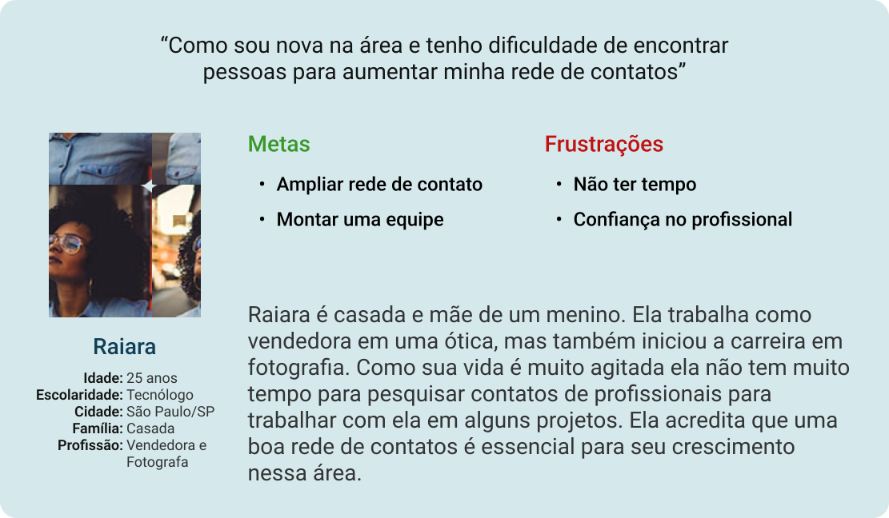
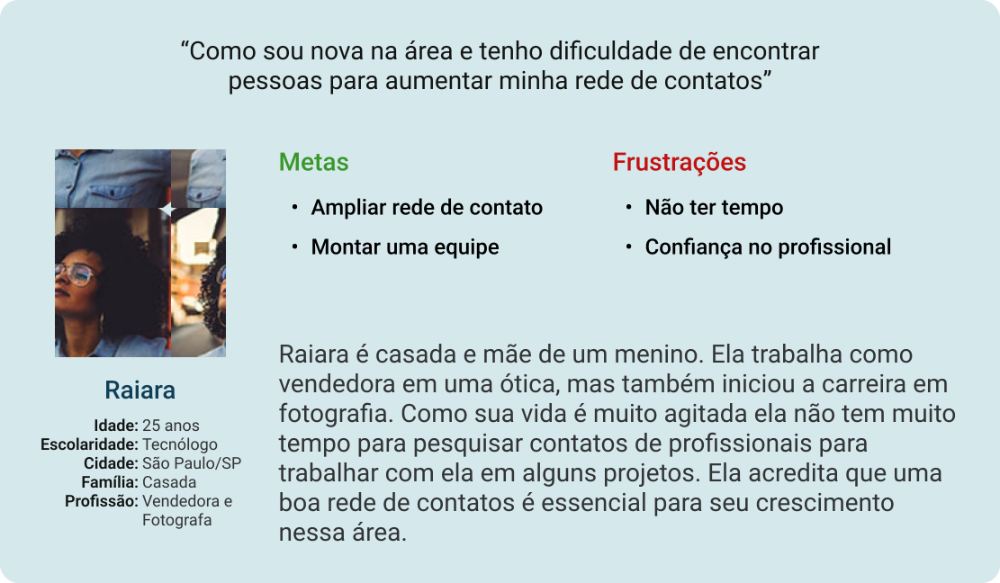
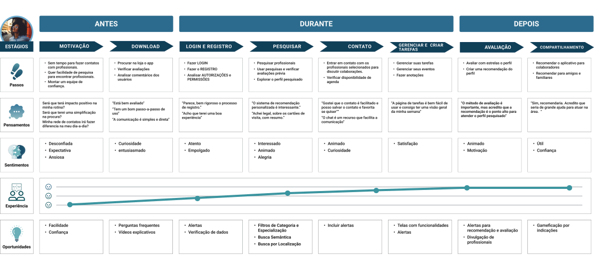

Desafio
Criar uma aplicativo para atender profissionais que atuam como prestadores de serviços e desejam contratar profissionais qualificados de forma rápida e fácil. Além disso, que procuram engajamento com empresas e ampliação de rede de contatos. Desenvolver um design com um orçamento baixo que se equipare à concorrência e atraia usuários, investidores e parceiros de cooperação.
Objetivo
O objetivo é criar uma interface intuitiva para um aplicativo de gerenciamento de contato. A primeira grande etapa desse processo é o registro dos usuários que vai ser atrelado através de um processo com etapas de confirmações, e para fazer contatos implementar um campo de pesquisa avançado e adicionamos funcionalidades abrangentes para tarefas e gerenciamento de equipes, eventos com equipe ou individual e um painel de controle personalizado para análise de desempenho, proporcionando uma experiência adaptada para networking e gestão de contatos.

Processo de Design
Ao iniciar o design desse projeto, foi abordado o processo de empatia, definição e ideação para o seu desenvolvimento.
No primeiro momento do design do aplicativo foi feito uma pesquisa primária com informações de interações diretas com usuários, através de uma entrevistas e questionários.
Benchmarking e Análise da Concorrência
Para entender o mercado, foi realizada a comparação dos concorrentes, gerando insights valiosos para solução.

Matriz CSD
A matriz CSD foi utilizada como base para a criação da proto-persona. A persona foi validada através das pesquisas quantitativas e qualitativas.
 

Mapa de empatia
Definida a proto-persona, criei o mapa de empatia e a jornada do usuário, mapeando as etapas do processo de descoberta, para então identificar as possíveis oportunidades.
Um mapa de empatia é um diagrama fácil de entender que explica tudo o que os designers descobriram sobre um tipo de usuário. Uma forma eficaz para colocar-se no lugar do usuário. Esse foi o método que utilizei para organizar os sentimentos e frustrações.


Aspecto problemático
Em relação à autenticidade e veracidade das informações fornecidas pelos profissionais.

Aspecto problemático
Sobre a capacidade dos fotógrafos selecionados em cumprir as demandas dos eventos.

Aspecto problemático
Saber se os profissionais realmente possuam as habilidades necessárias.

Aspecto problemático
Visualizar a agenda da sua equipe para remanejamento de pessoal nos trabalhos.
Jornada do Usuário
Utilizei a ferramenta Jornada do Usuário para detalhar e entender melhor as rotinas do usuário, identificando oportunidades para solucionar os problemas encontrados.

Processo de Ideação
O processo de ideação é importante para encontrar várias soluções de design para os problemas que nossos usuários possam estar enfrentando.
Como podemos
Como podemos é uma maneira do design thinking, que permite transformar problemas que os usuários estão enfrentando em oportunidades de design.

Método Crazy Eights | Storyboards

Storyboard de visão geral
Que se concentra na experiência do usuário e como as pessoas vão usar o produto ao longo do dia e por que esse produto será útil. Focam no “como” e no “porquê” .

Storyboard: close-up
O esboço de cada painel focará no produto e como o usuário interage com com o app. Têm como foco o produto, ou “o quê”.


Iniciando o Design
Arquitetura da Informação (AI)
A arquitetura da informação, ou AI, organiza o conteúdo para ajudar os usuários a entender onde estão no produto e onde ficam as informações que eles estão buscando.
Acesse o link:
Wireframes de papel
Os wireframes papel é uma maneira rápida de gerar ideias e de baixo custo para o desenvolvimento do aplicativo.
Numa primeira etapa foram criados wireframes para testar e concordar com as orientações gerais e para esclarecer blocos de conteúdo e fixar a estrutura do site.
Acesse o link:
Para aperfeiçoar o desenvolvimento do aplicativos criei guia de estilo para definir a padronização de elementos visuais e assim garantir consistência e a coesão.
O sistema de cor existente foi simplificado e a escala de cinza ajustada com um leve brilho azul nos tons de cinza.
E em relação à tipografia, optamos por uma fonte mais contemporânea e de fácil leitura na web. Para destacar os títulos, escolhemos a Roboto Serif para proporcionar um contraste eficaz.
Botões CTA

Conjunto de ícones
Para assegurar uma interface visualmente atraente, optei por ícones com uma espessura de 700 para sustentar a clareza da visualização.
Logotipo
O projeto adota componentes otimizados de maneira robusta e uma abordagem somente para dispositivos móveis. A proposta é reunir elementos que o usuário já esteja familiarizado, promovendo uma experiência orgânica para aprimorar sua performance.

Obrigada!
Obrigado pelo seu tempo analisando meu trabalho do aplicativo FácilFree! Entre em contato, caso, queira deixar uma sugestão ou colaborar com o projeto.
Acesse o link: